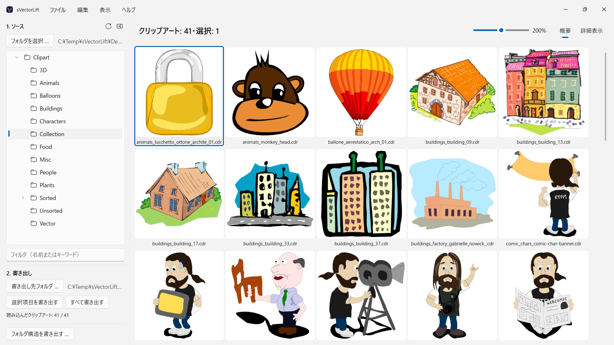
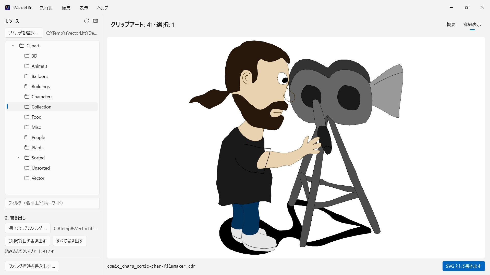

CorelDRAWのCDに眠る何千枚ものヴィンテージ・クリップアート。もうほとんどのソフトで開けない形式に閉じ込められたままです。sVectorLiftは、コレクション全体をひと目で見渡せるようにし、今日そのまま使える本物のSVGとしてよみがえらせます。
 動画を見る – YouTube で3分（英語・日本語字幕付き）
動画を見る – YouTube で3分（英語・日本語字幕付き）


棚のどこかに、何年も前に買ったクリップアート集のCDが眠っていませんか。ファイルはちゃんと残っているのに、いまのPCではほとんどのソフトで開けず、コレクション全体をひと目で見渡せるものはさらに限られます。
対応言語（25）：Deutsch · English · Español · Français · Italiano · Nederlands · Português (Brasil) · Português (Portugal) · Svenska · Norsk · Suomi · Polski · Čeština · Hrvatski · Magyar · Română · Türkçe · Русский · Українська · فارسی · ไทย · 日本語 · 한국어 · 简体中文 · 繁體中文
アプリはWindowsの表示言語に従います。
sVectorLiftは、そのアートワークをもう一度「使える素材」に戻します。一枚一枚を本物のSVGとして組み直すので、どんなサイズでも輪郭はくっきり。色も形も編集でき、Illustrator、Affinity、Inkscape、Figma、そしてWebサイトへそのまま持ち込めます。ただ「また見られる」だけではありません。「また使える」のです。名前にある「Lift」は、そこから来ています。ヴィンテージのベクター素材を、いまの道具で扱える水準へ引き上げる——それがこのアプリです。
■ 対応フォーマット
・CorelDRAWドキュメント（.cdr）バージョン6〜9
・Corel Binary Meta File（.cmx）— 他のツールが読み込みを拒む初期のCDRX形式にも対応
・Windows Metafile（.wmf）
・Computer Graphics Metafile（.cgm）
・QuickDraw 3D Metafile（.3dm、.3dmf）— 画像としてレンダリング
・Scalable Vector Graphics（.svg）— そのまま表示
拡張子が.cdrでも、中身はCorelDRAWではなくCMXというファイルは珍しくありません。一般的なコンバータがつまずくのは、まさにこれが理由です。sVectorLiftは、その両方を読み取ります。
sVectorLiftはクリップアートのライブラリのために作られています。イラスト、シンボル、図版が対象です。ページレイアウト用のツールではなく、複数ページのパンフレットや印刷用のひな形を忠実に再現することは目指していません。
■ 本物のベクター変換
プレビュー用のサムネールを写し取るのではありません。sVectorLiftは図版そのものを解析します。パスとベジェ曲線、塗りの色、グラデーション、輪郭線と破線パターン、パターンやテクスチャの塗り、埋め込み写真、そしてテキストオブジェクトまで。書き出されるのは、拡大しても、色を変えても、編集しても崩れない、正真正銘のベクターデータです。絵を写した画像ではありません。
ラスター画像だけでできたファイルはPNGとして書き出すので、失われるものはありません。
ベクターではなく画像が必要なときは、「PNG として書き出す」と「JPG として書き出す」で、どの図版も画像としてレンダリングできます。SVGファイルも対象で、サイズは「設定」で指定したとおりです。
■ ライブラリを見渡す
・サブフォルダも含めた、コレクション全体のフォルダツリー
・くっきりしたベクターサムネールのグリッド表示とサイズスライダ
・矢印キーでフォルダ内を行き来できる詳細表示
・名前やキーワードで絞り込み
・エクスプローラーと同じ感覚の複数選択：クリック、Ctrl+クリック、Shift+クリック、ドラッグ選択、Ctrl+A
・エクスプローラーから単一ファイルを直接開く（「プログラムから開く」またはダブルクリック）
・最近使ったフォルダ — 開いていたサブフォルダと選択中のファイルまで記憶
・選択したファイルやフォルダ全体を、まとめて書き出し
・サブフォルダを含むフォルダ構造全体を一度に変換 — 書き出し先フォルダでも同じ構造を維持
・名称変更、エクスプローラーで表示、ごみ箱に移動
・フォルダツリーのフォルダへのドラッグ＆ドロップでコレクションを整理 — エクスプローラーと同じルールで、Ctrlでコピー、Shiftで移動。Ctrl+Zで元に戻せます。エクスプローラーとの間でも可能
■ 速く、PCにやさしく
サムネールは実際に画面に映っている分だけ、バックグラウンドでレンダリングしてキャッシュします。何千ものファイルの処理を待たされることなく、大きなフォルダもすぐに開きます。
すべての処理はPCの中だけで完結します。ネットワーク接続もアカウントも不要。データを収集することもありません。
CorelDRAWはCorel Corporationの商標です。sVectorLiftは独立したアプリであり、Corelとの提携関係はありません。
- Windows 11 以降が必要
- 24 言語に対応
- サポート： SwiftAppsBavaria@gmx.net
- プライバシーポリシー